Окружность
Вписанная Описанная Теоремы Углы
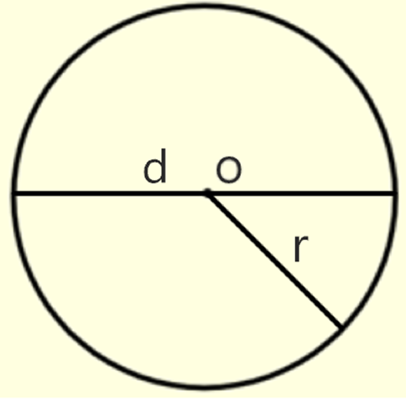
1.) Окружность-это множество точек плоскости, расположенных на равном расстоянии от выбранного центра.
1.) Центральный угол - это угол, вершина которого лежит в центре окружности. Центральный угол равен градусной мере дуги, на которую он опирается.
Секущая и касательная
1.) Касательная - это прямая, имеющая с окружностью одну общую точку.
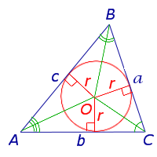1.) Центр окружности, вписанной в многоугольник лежит на пересечении биссектрисс многоугольника. 3.) В четырёхугольник можно вписать окружность, если суммы противоположных сторон четырёхугольника равны(верно обратное утверждение).
1.) Центр окр-ти, описанной вокруг многоугольника, лежит на пересечении серединных перпендикуляров к сторонам многоугольника.
1.) Теорема: О пересекающихся хордах. 2.) Теорема: О хорде, перпендикулярной диаметру. 3.) Теорема: Радиус, проведенный в точку касания, перпндикулярен касательной. 5.) Теорема о квадрате касательной: 6.) Теорема об угле между касательной и хордой:
7.) Теорема о двух секущих:
2.) Радиус - отрезок, соединяющий центр окружности с любой точкой, лежащей на окружности.
3.) Хорда - отрезок, соединяющий две точки окружности.
4.) Диаметр - хорда, которая проходит через центр окружности.
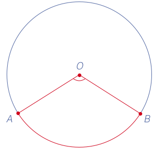
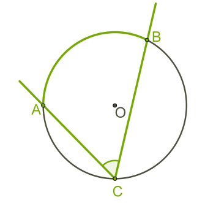2.) Вписанный угол — это угол, вершина которого лежит на окружности, а стороны пересекают эту окружность.
Градусная мера угла, вписанного в окружность, равна половине градусной меры дуги, на которую он опирается, и половине градусной меры
соответствующего этой дугецентрального угла.
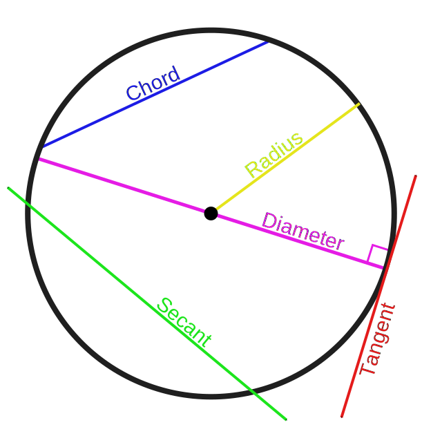
2.) Секущая - это прямая, имеющая с окружность две общие точки.
2.) В любой треугольник можно вписать окружность.
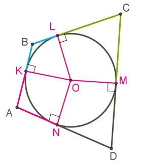
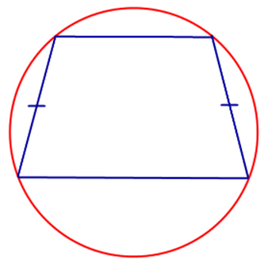
2.) Вокруг четырёхугольника можно описать окр-ть, если сумма противоположных углов четырёхугольника равна 180 градусам.
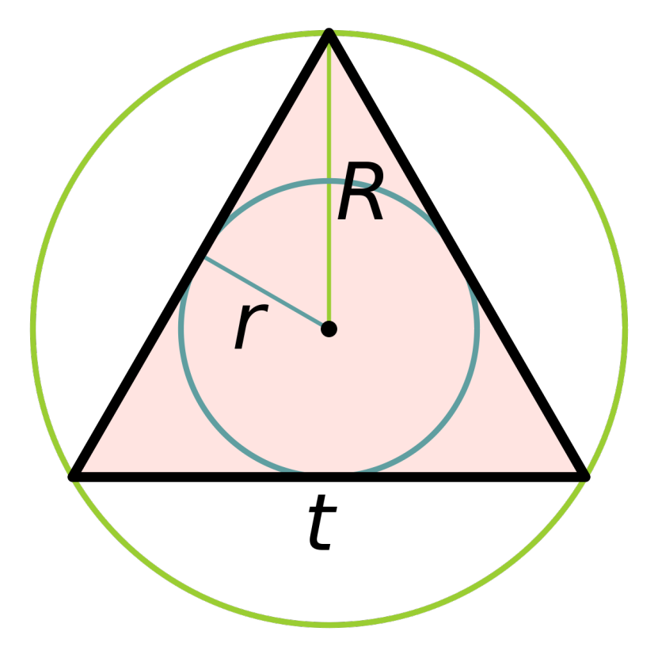
3.) Вокруг любого треугольника можно описать окр-ть
4.) Если вокруг трапеции описана окр-ть, то такая трапеция равнобедренная.
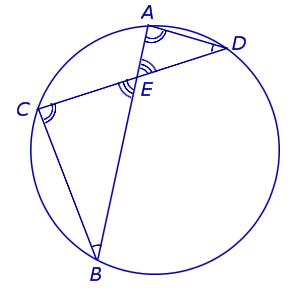
Произведения отрезков пересекающихся хорд равны.
CE * ED = AE * EB
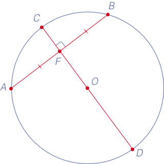
Хорда, перпендикулярная диаметру, делит её пополам.
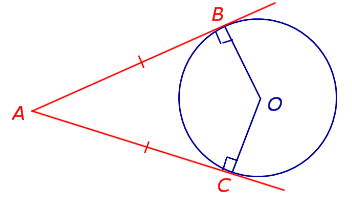
4.) Теорема об отрезках касательных:
отрезки касательных, проведенный к окружности из одной точки, равны, а отрезок,
соединяющий центр окружности с точкой, из которой проведены
касательные является биссектрисой угла между ка-
сательными.
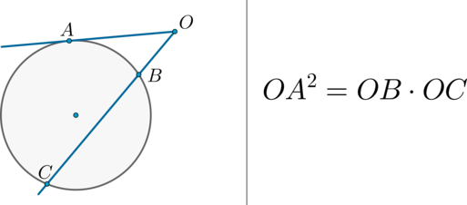
Если к окружности из одной точки проведены касательная
и секущая, то квадрат отрезка касательной равен произведению всей секущей
на её внешнюю часть.
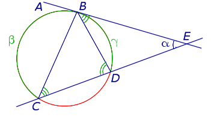
Угол между касательной и хордой, проведенной из точки касания, равен вписанному углу, опирающемуся на эту хорду.
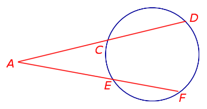
Если к окружности из одной точки проведены две секущие, то произведение всей одной из секущих на ее внешнюю часть
равно произведению всей второй секущей на её вписанную часть.
AD * AC = AF * EF